| La machine décrite dans la présente documentation est conforme aux exigences essentielles de santé et de sécurité de la directive 2006/42/CE relative aux machines. Une déclaration de conformité CE a été établie par le fabricant et est tenue à la disposition des autorités compétentes. La machine a été conçue et fabriquée conformément aux normes harmonisées applicables, notamment EN ISO 12100 et EN 60204-1, le cas échéant. |
| Bruit | < 70 dB. |
| Masse de l'équipement | 80 kg (176.4 lb) sans pieds support, 110 kg (242.5 lb) avec pieds support. |
| Dimensions | Longueur : 1.15 m (45.3 in) Largeur : 0.75 m (29.5 in) Hauteur : 0.85 m (33.5 in). |
| Pression pneumatique nominale d'utilisation | 6 bars. |
| Consommation d'air nominale en utilisation continue | 7 litres / minute. |
| Puissance nominale | 0,9 kW. |
| Organes de sécurité |
Protecteurs fixes.
Protecteur mobile avec capteur de sécurité.
Arrêt d'urgence.
Module de contrôle de sécurité (redondance
et auto contrôle des circuits de sécurité).
|
| Automate programmable | M221 CE40R de Télémécanique. |
| Constructeur |
RAVOUX AUTOMATISMES
Rue de l’industrie - ZI Vichy Rhue
03300 CREUZIER LE VIEUX
Tél. +33 4.70.97.48.62
|
La MINIDOSA est une machine de flaconnage. Les flacons entrent vides dans la machine et ressortent remplis de liquide et vissés d'un bouchon.
La MINIDOSA est une machine à visée pédagogique. Elle permet aux élèves de filières technologiques d'appréhender des conditions industrielles réalistes dans un environnement contrôlé.
Protéger la machine de l’humidité et des projections d’eau.
N’accéder au coffret d’alimentation électrique qu’avec l’habilitation nécessaire.
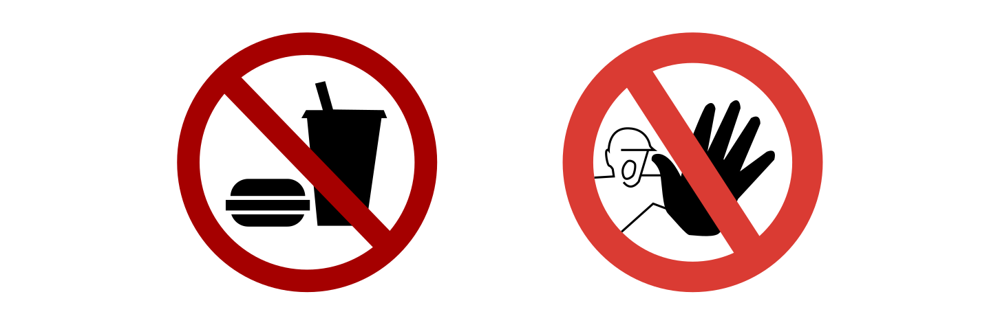
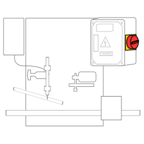 |
Interrupteur principal
Situé sur le côté droit de la machine.
Met la machine sous tension.
|
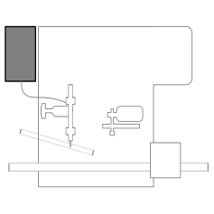 |
Réservoir
Contient le liquide utilisé pour le remplissage
des flacons.
Capacité : 1 L. |
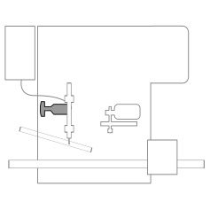 |
Vis de butée
Règle la capacité de liquide dans chaque
flacons.
Capacité maximale : 10 cl. |
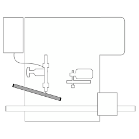 |
Rampe de distribution
Située derrière le poste de remplissage.
Sert à stocker les bouchons déposés trous
vers le bas.
Capacité : 13 bouchons. |
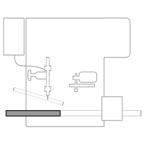 |
Tapis d’entrée
Transporte les flacons vides vers le plateau.
Capacité : 11 flacons. |
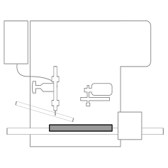 |
Plateau
Transporte les flacons depuis le tapis
d’entrée à la station de remplissage de liquide, vissage de bouchons
jusqu’au tapis de sortie.
Capacité : 3 flacons. |
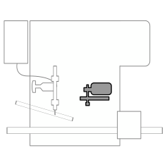 |
Poste de vissage
Visse un bouchon déposé sur le flacon.
|
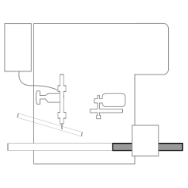 |
Tapis de sortie
Évacue les flacons remplis et bouchés.
Capacité : 6 flacons. |
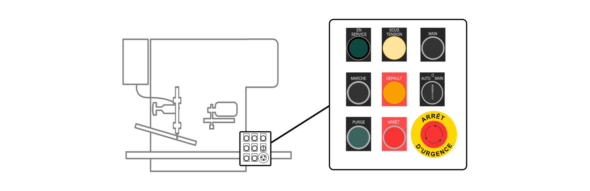
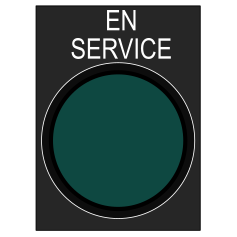 |
Bouton-voyant EN
SERVICE
Est allumé lorsque la
machine est en service.
Met la
machine en service.
|
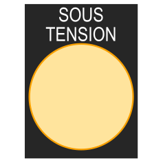 |
Voyant SOUS TENSION
Est allumé lorsque la machine est sous
tension.
|
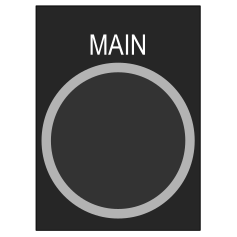 |
Bouton MAIN
Il est utilisé lorsque le sélecteur AUTO
/ O / MAIN est en mode MAIN.
Fait
tourner le plateau d'un cran.
|
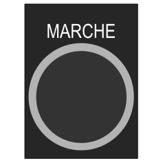 |
Bouton MARCHE
Est utilisé lorsque le sélecteur AUTO
/ O / MAIN est en mode AUTO.
Lance
la production de flacons remplis et bouchés.
|
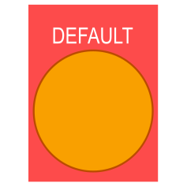 |
Voyant DEFAUT
Est allumé lorsque le bouton coup de poing
ARRET D'URGENCE est enclenché.
|
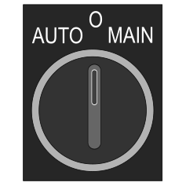 |
Sélecteur AUTO
/ O / MAIN
Propose trois modes
: AUTO (Automatique), O (Purge), MAIN (Manuel)
|
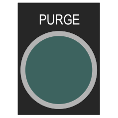 |
Bouton
PURGE
Est utilisé lorsque le sélecteur
AUTO / O / MAIN est en mode 0.
Actionne
la seringue du poste de remplissage.
|
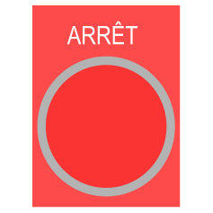 |
Bouton ARRET
Est utilisé lorsque la production en mode
AUTO est en cours.
Met la production
en pause.
|
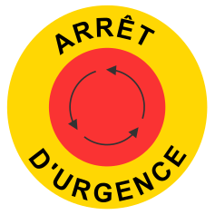 |
Bouton coup de
poing ARRET D'URGENCE
Met la production
en pause.
Met la machine hors
service.
Doit être acquitté avant
de relancer la production.
|